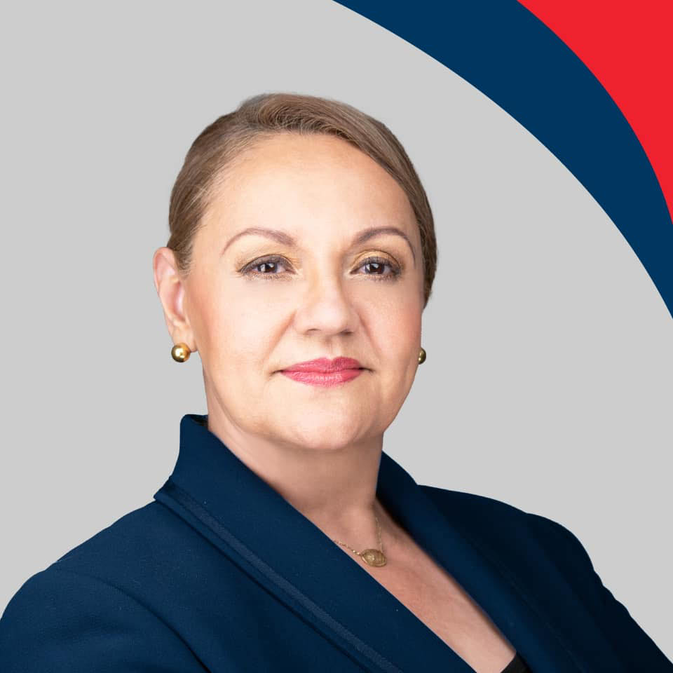
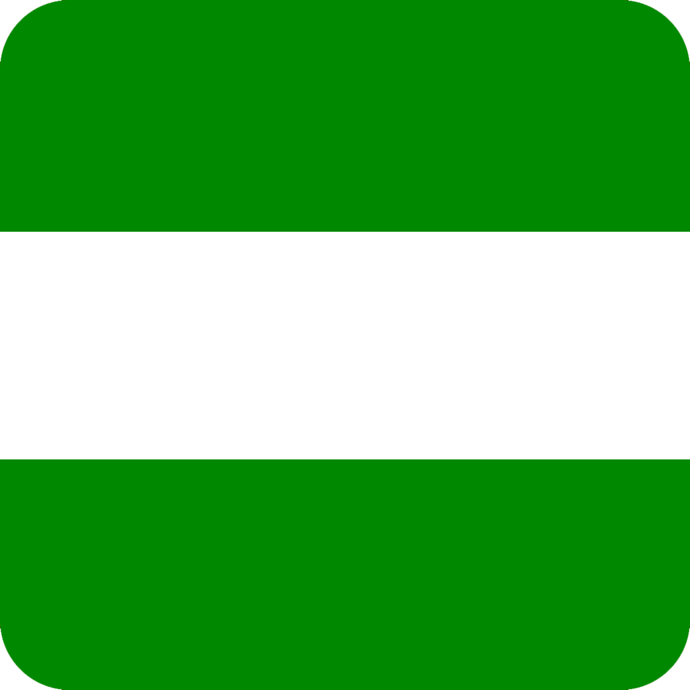

|
 |
 |
 |
| Sitio de la primera encuesta | Sitio de la segunda encuesta | ||
|---|---|---|---|
|  | José María Figueres Olsen |
Porcentaje de votos esperados: 15% | Porcentaje de votos esperados: 17% |
Rodrigo Chaves Robles |
Porcentaje de votos esperados: 6% | Porcentaje de votos esperados: 8% | |
Fabricio Alvarado Muñoz |
Porcentaje de votos esperados: 11% | Porcentaje de votos esperados: 10% | |
Lineth Saborío Chaverri |
Porcentaje de votos esperados: 14% | Porcentaje de votos esperados: 13% |